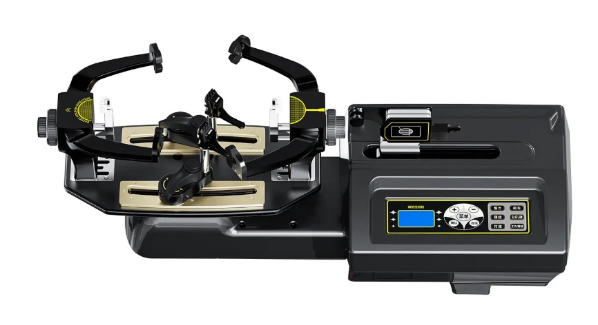
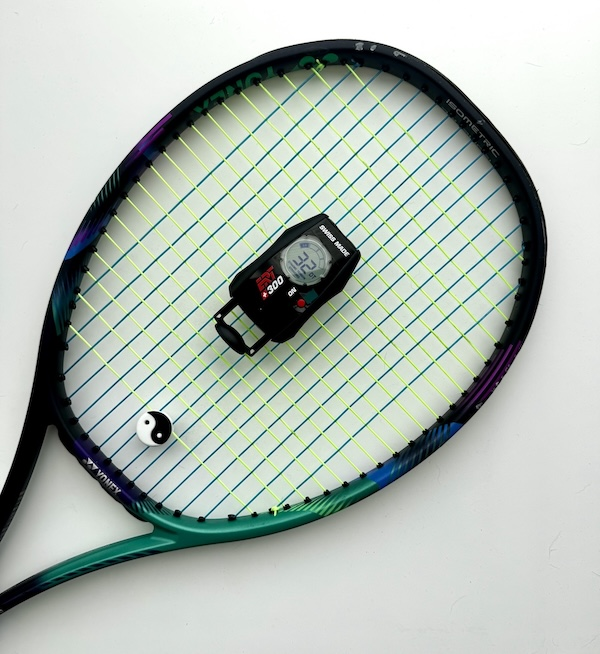

At Highfield Stringing, we believe in combining craftsmanship with cutting-edge technology to deliver exceptional results. That's why we use some of the most advanced tools in the industry.
The Siboasi S6 is a state-of-the-art electronic stringing machine used by professionals worldwide. It features precision electronic tensioning, automatic clamps, and a digital control system to ensure every string is tensioned perfectly. This machine is known for its consistency and speed — giving you optimal stringbed performance every time.
We also use the ERT 300 to measure Dynamic Tension (DT) — the actual stringbed stiffness — both before and after stringing. This high-precision device gives players valuable feedback on their racket’s tension over time and helps track string performance. DT readings allow for more informed decisions on when to restring based on real data.
Using this device after stringing allows me to quality control the restring before returning the racket. And then. a month or two down the line, I can check the DT for you and see how much your string tension has dropped.
We keep a digital database of all stringing work that we do including a record of your DT pre and post stringing as well as the strings and the tension used. We affix a small label in the yoke of the racket so you can quickly check the date, string type and tension yourself.